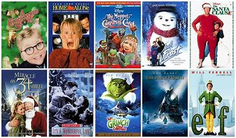
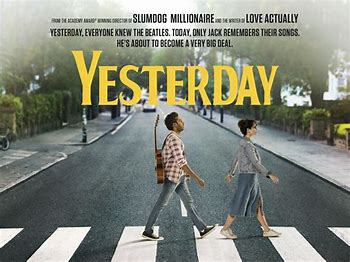
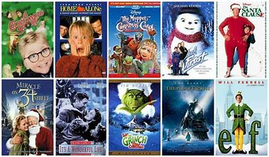
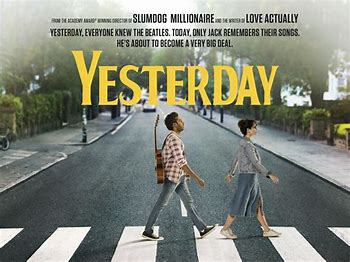

Jack Malik a struggling musician and after his accident on his bicycle Ellie gives him his guitar and Jack plays and soon realizes that he's the only person on Earth who can remember The Beatles after waking up in an alternate timeline where they never existed.
For more information on Yesterday, Please click the link: Yesterday
A glowing tribute to The Beatles and their music,this is both a tow tapping pleause to watch and a smart, occasionally scathing look at how we get things wrongs - EmpireThe film has lots of fun with its premise- until America beckons, then suddenly it seems to lose its head of steam. Yet it rallies in style for a beauticully judged and suprisingly moving finale - The Telegraph
One thing Yesterday does is rather miraculous. It forces us to hear these Beatle songs as if for the first time - San Francisco Chronicle